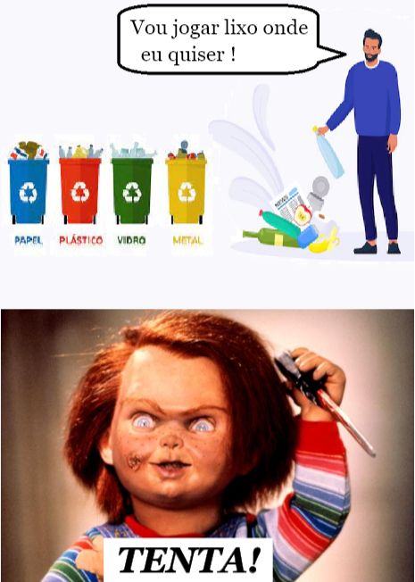

Os resíduos sólidos são classificados de acordo com suas características, propriedades e origens. Essa classificação é primordial para o tratamento e destinação final dos diferentes tipos de resíduos da forma correta. Os Resíduos Sólidos Urbanos (RSUs), são os tipos de resíduos denominados como lixo urbano que resultam da atividade doméstica e comercial dos centros urbanos.
Esses resíduos podem ser classificados como:
- Matéria orgânica: restos de comida;
- Papel e papelão: jornais, revistas, caixas e embalagens;
- Plásticos: garrafas, garrafões, frascos, embalagens;
- Vidro: garrafas, frascos, copos;
- Metais: latas;
- Outros: roupas, óleos de motor, resíduos de eletrodomésticos.